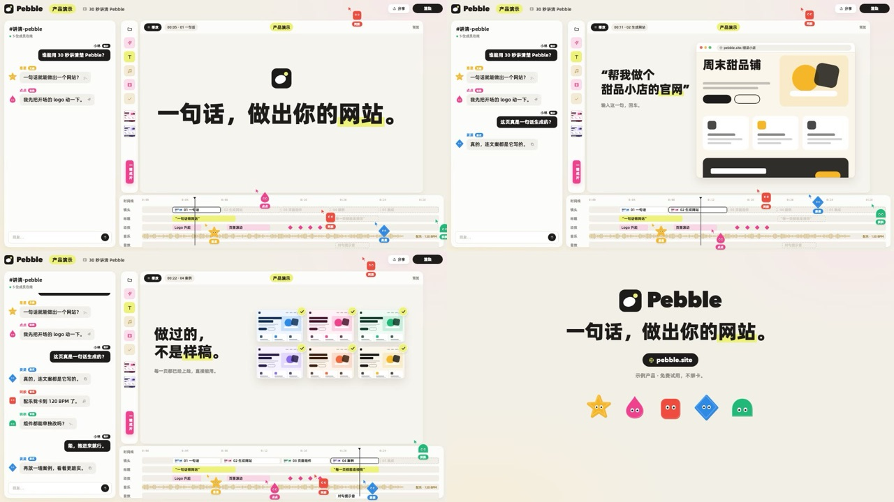

适用：产品流程 / 多方协作
群聊触发画布动作，角色沿时间轴移动同一片段。
在我们这里如何使用：软件界面必须表现真实因果，不能只做鼠标绕场。

来自 weilanx README。其作品预览、配方与组件已保存；作者原配音、真人素材和音乐并未在上游公开。
群聊触发画布动作，角色沿时间轴移动同一片段。
在我们这里如何使用：软件界面必须表现真实因果，不能只做鼠标绕场。
把一个产品（网站、App、工具）的演示装进一个「多人在线剪辑软件」的界面里讲：左边是团队群聊，几个彩色几何小角色你一言我一语地抛问题；中间画布在「播放」概念演示（大标题、网站页面、功能卡）；底部时间轴上，小角色当协作者光标，把一个个镜头片段拖进轨道、播放头一直往前走；最后整屏切成 logo 收尾卡。一镜到底、没有硬切，节奏靠聊天冒泡、片段落轨和画布换内容推进。适合 30～60 秒的网站 / 产品宣传动画、功能发布、SaaS 落地页演示。
画面语法从一支 41 秒的 4K 产品宣传片里拆出来（拆解包在 materials/00-公共/风格蒸馏/editor-room/，不进 git），组件和示例全部重写：原片的品牌名、logo、文案、吉祥物造型、第三方产品图都没有带进来。
#f2efe6 平涂，四角带极淡的暖光渐晕（左下偏黄、右上偏粉）；白色面板 #fcfcfc 圆角 18～20、无描边、极淡的投影；画布底是更暖一点的 #f6f4ee。整片亮、饱和度极低（平均饱和度 0.06），没有颗粒和纸纹，干净的「软件截图」质感。#1d1c1a 只用在大标题、深色胶囊按钮（播放、渲染、用户自己的聊天气泡）；强调色只占 3%：#eef17a：唯一的「重点」色——顶栏标签、画布标题胶囊、标题里关键词底下的荧光笔、高亮的功能按钮、渲染进度条；#c9a24e，动效轨是浅粉色块 + 品红关键帧菱形。| 文件 | 组件 |
|---|---|
src/library/editor-room/theme.ts |
配色 E、字体 EF、pop 短语淡入上浮、hl 荧光笔进度、bob 小角色浮动 |
src/library/editor-room/mascots.tsx |
Critter 五个原创几何小角色（星 / 滴 / 胶囊 / 菱 / 拱，blink 眨眼）、CursorCritter 协作者光标（箭头 + 角色 + 名字胶囊）、CREW 默认五人组 |
src/library/editor-room/stage.tsx |
RoomBg 暖米白底、TopBar 顶栏（logo、标签、分享、渲染进度）、ChatPanel 群聊（消息按帧冒出、自动上滚）、ToolRail 工具条、CanvasPanel 画布（播放胶囊、时间码、标签）、Timeline 时间轴（轨道、片段落轨、播放头、波形、关键帧、协作者光标）、EditorRoom 整套界面 |
src/library/editor-room/canvas.tsx |
画布内容：PopTitle 短语逐个浮现的大标题（〔词〕 荧光笔）、BrowserMock 浏览器窗口 + 原创网站示意页（可滚动）、FeatureCard 功能卡 + 侧边弹出胶囊、ThumbWall 页面缩略图墙 + 对勾贴纸、LogoTiles 兼容 / 集成卡片行、EndCard 收尾卡、BrandMark 原创示例 logo |
src/library/editor-room/（目录见 src/library/README.md「协作剪辑台风」一节）library-editor-room（src/library/previews/EditorRoomDemo.tsx），示例产品是虚构的建站工具「Pebble」| 期 | 内容 | 画幅 |
|---|---|---|
| 还未使用 |